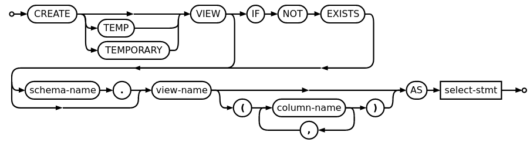

Ahmad Yoosofan
SQL 3
University of Kashan
update P set weight = null where pn='P6';
update s set status = status * 2 where city = 'London';
update employees set email = LOWER( firstname || "." || lastname || "@chinookcorp.com" );
update employees set lastname = 'Smith' where employeeid = 3;
update tableA set B = 'abcd', C = case when C = 'abc' then 'abcd' else C end where column = 1; -- https://stackoverflow.com/a/17081004/886607 update s set status = case when city = 'london' then status * 2 else status end
update s set status = case when city = 'London' then status * 2 when city = 'Paris' then status * 3 else status end
update s set status = case when city = 'London' then status / 4 when city = 'Paris' then status / 3 else status end
delete from sp where qty < ( select avg(qty) from sp ) ;
1 select sum(weight) as sq 2 from p where pn='p7';
1 select case 2 when sum(weight) is null then 0 3 else sum(weight) 4 end as sq 5 from p 6 where pn='p7';
sq |
|---|
|
sq |
|---|
0 |
1 update student S 2 set tot_cred = ( 3 select sum(credits) 4 from takes, course 5 where takes.course_id = course.course_id 6 and S.ID= takes.ID and 7 takes.grade <> 'F' and 8 takes.grade is not null 9 );
1 case 2 when sum(credits) is not null 3 then sum(credits) 4 else 0 5 end
1 update student S 2 set tot_cred = ( 3 select case 4 when sum(credits) is not 5 null then sum(credits) 6 else 0 7 end 8 from takes, course 9 where takes.course_id = course.course_id 10 and S.ID= takes.ID and 11 takes.grade <> 'F' and 12 takes.grade is not null 13 );
select pn, pname from p, ( select avg(weight) as averagev from p ) as temp where p.weight > temp.averagev ;
select pn, pname from p where p.weight > ( select avg(weight) from p ) ;
with temp (averagev) as( select avg(weight) from p ) select pn, pname from p, temp where p.weight > averagev ;
select pn from ( select avg(weight) as averagev from p ) as temp1, ( select pn, sum(qty) as total from sp group by pn ) as temp2 where temp2.total > temp1.averagev ;
with temp1(averagev) as( select avg(weight) from p ), temp2(pn, total) as( select pn, sum(qty) from sp group by pn ) select pn from temp1, temp2 where temp2.total > temp1.averagev ;
with dept_total (dept_name, value) as( select dept_name, sum(salary) from instructor group by dept_name ), dept_total_avg(value) as( select avg(value) from dept_total ) select dept_name from dept_total, dept_total_avg where dept_total.value > dept_total_avg.value
select * -- always empty from p where weight = null ; select * from p where weight is null ; select * from p where weight > 13 or city = 'Paris' ;
expression IS TRUE expression IS NOT TRUE expression IS FALSE expression IS NOT FALSE expression IS UNKNOWN expression IS NOT UNKNOWN
(F: false; U: unknown; T: true)
A | ~A |
|---|---|
F | T |
T | F |
U | U |
A and B | B | |||
|---|---|---|---|---|
T | F | U | ||
A | T | T | F | U |
F | F | F | F | |
U | U | F | U | |
A or B | B | |||
|---|---|---|---|---|
T | F | U | ||
A | T | T | T | T |
F | T | F | U | |
U | T | U | U | |
1 select * 2 from List_of_tables 3 where (conditions) is unknown;
1 select * 2 from List_of_tables 3 where (conditions) is not unknown;
1 select * 2 from List_of_tables 3 where not ( (conditions) is not unknown);
1 select * 2 from List_of_tables 3 where ( (conditions) is not unknown) is not unknown;
Always True
نام قطعاتی را بیابید که وزن بیشتر از ۱۷ دارند.
1 select pname 2 from p 3 where weight > 17;
نام قطعاتی را بیابید که وزن آنها بیشتر از ۱۸ است و عرضهکنندهای در شهر پاریس آنها را عرضه کرده است.
1 select pname 2 from p join sp using(pn) join s using(sn) 3 where weight >= 18 and p.city = 'Paris';
1 select pname 2 from p join sp using(pn) and s using(sn) 3 where weight is not null 4 and weight >= 18 and p.city = 'Paris';
نام قطعاتی را بیابید که وزن آنها بیشتر از ۱۸ است یا وزنی ندارند و عرضهکنندهای در شهر پاریس آنها را عرضه کرده است.
1 select pname 2 from p join sp using(pn) and s using(sn) 3 where (weight is null or weight > 18) 4 and s.city = 'Paris';
نام قطعاتی را بیابید که وزن آنها بیشتر از ۱۸ است یا وزنی ندارند و عرضهکنندهای در شهر پاریس آنها را عرضه کرده است ولی اگر شهر عرضه کننده وارد نشده باشد وزن آن بیشتر از ۳۴ باشد.
1 select pname -- incorrect 2 from p 3 where weight > 17;
select n, d from t where n / nullif(d, 0) > 1 ; -- returns the first value, -- unless it's equal to the second -- in which case it returns NULL. -- It is equivalent to this CASE statement: -- CASE WHEN A <> B OR B IS NULL THEN A END -- The NULLIF() function returns NULL -- if two expressions are equal, otherwise -- it returns the first expression.
SELECT( SUM (CASE WHEN gender = 1 THEN 1 ELSE 0 END) / SUM (CASE WHEN gender = 2 THEN 1 ELSE 0 END) ) * 100 AS "Male/Female ratio" FROM members; -- ERROR: division by zero -- The reason is that the number of females is zero now. -- To prevent this division by zero error, you can use -- the NULLIF function as follows: SELECT ( SUM (CASE WHEN gender = 1 THEN 1 ELSE 0 END) / NULLIF ( SUM (CASE WHEN gender = 2 THEN 1 ELSE 0 END), 0 ) ) * 100 AS "Male/Female ratio" FROM members;
SELECT product, (price - COALESCE(discount, 0)) AS net_price FROM items;
SELECT product, ( price - CASE WHEN discount IS NULL THEN 0 ELSE discount END ) AS net_price FROM items;
SELECT CASE i WHEN NULL THEN 'Is Null' -- This will never be returned WHEN 0 THEN 'Is Zero' -- This will be returned when i = 0 WHEN 1 THEN 'Is One' -- This will be returned when i = 1 ELSE 'Other' END FROM t;
نام همهٔ قطعات را همراه با جمع عرضههای آنها بیابید در صورتی که وزن قطعه بیشتر از ۲۰ باشد یا این که وزنی نداشته باشد برای این قطعهها جمع عرضه در نظر گرفته شود وگرنه مانند قطعههای عرضه نشده، جمع عرضههای آنها صفر در نظر گرفته شود.
1 select pname 2 from p join sp using(pn) join s using(sn) 3 where weight > 17 and ;
نام قطعاتی را بیابید که وزن آنها بیشتر از ۱۸ باشد و عرضهکنندهای با وضعیت بیشتر از ۲۰ آنها را عرضه کرده باشد.
1 select pname 2 from p join sp using(pn) join s using(sn) 3 where weight > 17 and s.status >20;
1 ((pr) is not unknown) and pr ;
1 select * 2 from List_of_tables 3 where (conditions) is not unknown;
CREATE TABLE t ( a NUMERIC CHECK (a >= 0), b NUMERIC CHECK (b >= 0), CHECK ( a + b <= 10 ) );
1 create database sp2; 2 3 create table s ( 4 sn char(10) primary key, 5 sname char(30) not null, 6 status int default 10 check(status >= 10), 7 city char(20) default 'Shiraz' 8 ); 9 10 create table p ( 11 pn char(10) primary key, 12 pname char(30) not null, 13 color char(20), 14 weight numeric(9, 2) check(weight > 2 and weight < 90000), 15 city char(20) 16 ); 17 18 create table sp ( 19 sn char(10) references s on update cascade on delete cascade, 20 pn char(10) references p on update cascade on delete cascade, 21 qty int default 1 check(qty > 0), 22 primary key (sn, pn) 23 );
1 create table "Department"( 2 "DN" integer default 0 primary key, 3 "DeptName" varchar(30) default '', 4 "MgrSSN" varchar(20) REFERENCES "Employee"("SSN") 5 ); 6 create table "Employee"( 7 "SSN" varchar(20) primary key, 8 "name" varchar(40) not null, 9 "salary" numeric(15,2) default 0, 10 "Dn" integer default 0 REFERENCES "Department"("DN") 11 ); 12 13 insert into "Department"("DN", "DeptName", "MgrSSN") 14 values(1, 'computer', ''); 15 insert into "Department"("DN", "DeptName", "MgrSSN") 16 values(2, 'Chemistry', '');
-- SQLite Result: FOREIGN KEY constraint failed At line 14: insert into "Department"("DN", "DeptName", "MgrSSN") values(1, 'computer', '');
1 create table "Department"( 2 "DN" integer default 0 primary key, 3 "DeptName" varchar(30) default '', 4 "MgrSSN" varchar(20) REFERENCES "Employee"("SSN") 5 );
ERROR: relation "Employee" does not exist
1 create table "Employee"( 2 "SSN" varchar(20) primary key, 3 "name" varchar(40) not null, 4 "salary" numeric(15,2) default 0, 5 "Dn" integer default 0 REFERENCES "Department"("DN") 6 );
ERROR: relation "Department" does not exist
1 create table "Department"( 2 "DN" integer default 0 primary key, 3 "DeptName" varchar(30) default '', 4 "MgrSSN" varchar(20) 5 ); 6 7 create table "Employee"( 8 "SSN" varchar(20) primary key, 9 "name" varchar(40) not null, 10 "salary" numeric(15,2) default 0, 11 "Dn" integer default 0 12 );
1 insert into "Department"("DN", "DeptName", "MgrSSN") 2 values(1, 'computer', ''); 3 insert into "Department"("DN", "DeptName", "MgrSSN") 4 values(2, 'Chemistry', ''); 5 6 insert into "Employee"("SSN", "name", "salary", "Dn") 7 values('e2', 'kamran', 1200, 1); 8 9 insert into "Employee"("SSN", "name", "salary", "Dn") 10 values('e10', 'ali', 1200, 2);
1 update "Department" set "MgrSSN"='e2' where "DN"=1; 2 update "Department" set "MgrSSN"='e10' where "DN"=2; 3 4 alter table "Department" add constraint "departmentManager" foreign key("MgrSSN") 5 references "Employee"("SSN") on update cascade on delete no action; 6 7 update "Employee" set "Dn"=1 where "SSN"='e2'; 8 update "Employee" set "Dn"=2 where "SSN"='e10'; 9 10 alter table "Employee" add constraint "employeeDepartment" foreign key("Dn") 11 references "Department"("DN") on update cascade on delete no action; 12 -- set default 13 -- set null
create table tte1( myid integer default 0 primary key, salary numeric(14,2) check(salary >= 100), name1 varchar(20) not null, dept2 integer references "Department"("DN"), fee numeric(14, 2) default 10, --check(salary - fee > 80) check(salary - fee > 80) ); insert into tte1(myid, salary, name1, dept2, fee) values(31, 1200, 'هوشنگ', 1, 200);
Result: FOREIGN KEY constraint failed At line 10: insert into tte1(myid, salary, name1, dept2, fee) values(31, 1200, 'هوشنگ', 1, 200);
create table tte1( myid integer default 0 primary key, salary numeric(14,2) check(salary >= 100), name1 varchar(20) not null, dept2 integer references "Department"("DN"), fee numeric(14, 2) default 10, --check(salary - fee > 80) check(salary - fee > 80) ); insert into tte1(myid, salary, name1, dept2, fee) values(31, 1200, 'هوشنگ', 1, 200);
INSERT 0 1
create table "Department"( "DN" integer default 0 primary key, "DeptName" varchar(30) default '', "MgrSSN" varchar(20) ); create table "Employee"( "SSN" varchar(20) primary key, "name" varchar(40) not null, "salary" numeric(15,2) default 0, "Dn" integer default 0 );
insert into "Department"("DN", "DeptName", "MgrSSN") values(1, 'computer', ''); insert into "Department"("DN", "DeptName", "MgrSSN") values(2, 'Chemistry', '32'); alter table "Department" add constraint "departmentManager" foreign key("MgrSSN") references "Employee"("SSN") on update cascade on delete no action;
ERROR: insert or update on table "Department" violates foreign key constraint "departmentManager" DETAIL: Key (MgrSSN)=(32) is not present in table "Employee".
pragma foreign_keys=off; pragma foreign_keys=on; pragma foreign_keys=off; insert into "spj"("sn", "pn", "jn", "qty") values('S7', 'P1', 'J1', 123); delete from "SPJ" where "sn" = 'S7'; pragma foreign_keys=on; insert into "spj"("sn", "pn", "jn", "qty") values('S7', 'P1', 'J1', 123); Error: Help: foreign key constraint failed
alter table Orders add constraint FK_PersonOrder foreign key (PersonID) references Persons(PersonID);
نام قطعاتی را بیابید که وزن آن قطعهها از وزن همهٔ قطعههای درون شهر پاریس بیشتر باشد
select T.pname from p as T where not exists( select * from p where city = 'Paris' and p.weight >= T.weight );
select pname from p where weight > all( select weight from p where city='Paris' ) ;
نام قطعاتی را بیابید که وزن آن قطعهها از دست کم وزن یک قطعه درون شهر پاریس بیشتر باشد
select T.pname from p as T where exists( select * from p where city = 'Paris' and T.weight > p.weight ) ;
select pname from p where weight > some ( select weight from p where city = 'Paris' ) ;
نام قطعاتی را بیابید که عرضهکنندهای همشهری آن قطعهها باشد
select pname from p where city in ( select city from s ) ;
کوشش کنید با exists این پرسوجو را حل کنید.
select pname from p where exists ( select * from s where p.city = s.city ) ;
نام قطعاتی را بیابید که هیچ عرضهکنندهای در شهر آن قطعات نباشد
select pname from p where city not in ( select city from s ) ;
کوشش کنید با exists این پرسوجو را حل کنید.
select pname from p where not exists ( select * from s where p.city = s.city ) ;
نام قطعاتی را بیابید که هیچ عرضه کنندهٔ همشهریشان آنها را عرضه نکرده باشد.
select pname from p where city, pn not in ( select city, pn from s natural join sp ) ;
کوشش کنید با exists این پرسوجو را حل کنید.
select pname from p where not exists( select * from s natural join sp where s.city = p.city and sp.pn = p.pn ) ;
نام قطعاتی را بیابید که هیچ عرضه کنندهٔ همشهریشان هیچ قطعهای را عرضه نکرده باشد.
نام قطعاتی را بیابید که عرضه کنندهای در شهرشان نباشد که قطعهای عرضه کرده باشد.
select pname from p where city not in ( select city from s natural join sp ) ;
کوشش کنید با exists این پرسوجو را حل کنید.
select pname from p where not exist( select * from s natural join sp where s.city = p.city ) ;
نام قطعاتی را بیابید که هیچ عرضه کنندهٔ همشهریشان هیچ قطعهای را عرضه نکرده باشد.
select pname from p where city not in ( select city from s where sn not in (select sn from sp) );
select pname from p where city in ( select city from s where sn not in (select sn from sp) );
select pname from p where city not in ( select city from s where sn in (select sn from sp) );
نام قطعاتی را بیابید که وزن آنها از قطعهای در شهر کاشان بزرگتر باشد.
select pname from p where weight > some ( select weight from p where city = 'Kashan' ) ;
select pname from p as T where exist( select * from p where p.city = 'Kashan' and T.weight > p.weight ) ;
شمارهٔ قطعاتی را بیابید که در شهر آنها عرضه کنندهای با وضعیت بزرگتر از ۶ وجود داشته باشد.
select pn from p where city in ( select city from s where status > 6 );
select pn from p where city = some( select city from s where status > 6 );
select pn from p where city = ( -- Error select city from s where status > 6 );
select city from s where status > 6; -- result has more -- than a row
select pn from p join s using(city) where status > 6;
نام و وضعیت عرضه کنندگان را به صورت صعودی بر پایهٔ وضعیت آنها بیابید.
select sname, status from s order by status ;
select sname, status from s order by status asc;
sname | status |
|---|---|
Jones | 10 |
Smith | 20 |
Clark | 20 |
Blake | 30 |
Adams | 30 |
Ali | 40 |
نام و وضعیت عرضه کنندگان را به صورت نزولی بر پایهٔ وضعیت آنها بیابید.
select sname, status from s order by status desc;
sname | status |
|---|---|
sname | status |
Ali | 40 |
Blake | 30 |
Adams | 30 |
Smith | 20 |
Clark | 20 |
Jones | 10 |
create table mytemp( name varchar(20) not null, ssn bigint primary key ); insert into mytemp(ssn) values(20); --- Help: not null constraint failed: mytemp.name
alter table mytemp add last_name varchar(20); insert into mytemp(ssn, name) values(20, "ali");
select * from mytemp;
شمارهٔ عرضهکنندگانی را بیابید که جمع وزن قطعههایی که عرضه میکنند بیشتر از ۱۱ هزار باشد
select sn from spj join p using(pn) group by sn having sum(weight * qty) > 11000;
select sn from s where 11000 < ( select sum(weight * qty) from p natural join spj where spj.sn = s.sn );
شماره و نام عرضه کنندگان را بیابید. اگر وضعیت عرضهکننده بزرگتر از ۲۰ بود کنار مشخصات عرضه کننده کلمهٔ big و در غیر این صورت کلمهٔ small بگذارید.
select sn, sname, case when status > 20 then 'big' else 'small' end size_of_supplier from s;
select pn from p where city = ( select city from s where status>6 );
select pn from p where city in ( select city from s where status>6 );
select pn, (select sum(status) from s where s.city=p.city ), city from p order by weight desc;
select pn, (select sum(status) from s where s.city=p.city ) as sum_status, city from p order by weight desc ;
CREATE TABLE Persons ( ID int NOT NULL UNIQUE, LastName varchar(255) NOT NULL, FirstName varchar(255), Age int );
CREATE TABLE Persons ( ID int NOT NULL, LastName varchar(255) NOT NULL, FirstName varchar(255), Age int, UNIQUE (ID) );
CREATE TABLE Persons ( ID int NOT NULL, LastName varchar(255) NOT NULL, FirstName varchar(255), Age int, CONSTRAINT UC_Person UNIQUE (ID,LastName) );
create table "student"( "SSN" varchar(20) unique not null, "name" varchar(40) not null, "student_number" bigint Primary key ); insert into "student"("SSN", "name", "student_number") values ("38947389", "کامران خداپرستی", 973433), ("38472389", "کوروش پارسایی", 9632847), ("38947389", ")احمد یوسفان", 93802932);
create table contacts( contact_id integer primary key, first_name text, last_name text, email text not null UNIQUE );
create table shapes( shape_id integer primary key, background_color text, foreground_color text, UNIQUE(background_color,foreground_color) );
ALTER TABLE Persons ADD UNIQUE (ID);
ALTER TABLE Persons ADD CONSTRAINT UC_Person UNIQUE (ID,LastName);
ALTER TABLE Persons DROP CONSTRAINT UC_Person;
create table contacts ( contact_id integer primary key, first_name text not null, last_name text not null, email text, phone text not null check (length(phone) >= 10) );
create table products ( product_id integer primary key, product_name text not null, list_price DECIMAL (10, 2) not null, discount DECIMAL (10, 2) not null default 0, check (list_price >= discount and discount >= 0 and list_price >= 0) );
select pn from p where unique( select * from sp where sp.pn = p.pn ) ; -- not implemented in PostgreSQL
select pn from p where not unique( select * from sp where sp.pn = p.pn ) ; -- not implemented in PostgreSQL
نام شهرهایی را به دست آورید که عرضه کنندهای با وضعیت بیشتر از ۱۰۰۰ داشته باشند
select distinct city from s where exists ( select * from s as T where T.city=s.city and T.status>1000 )
select distinct city from s where s.status>1000
نام شهرهایی را به دست آورید که همهٔ عرضه کنندگان آن شهرها وضعیت بیشتر از ۱۰۰۰ داشته باشند
select distinct city from s where not exists ( select * from s as T where T.city=s.city and T.status<1000 );
select city from s except select city from s where s.status<=1000
create type Type_of_Menu as enum ('soft_menu', 'vertical_menu', 'horizontal_menu', 'reports', 'report_with_submenu', 'report_in_submenu' ); create table menu_access( menu_type Type_of_Menu, name char(256), visible boolean, primary key (menu_type, name) )
create type valid_colors as enum ('red', 'green', 'blue'); create table t ( color VALID_COLORS );
The following does not work
select from t where color like 'bl%';
create table t ( colors text check (colors in ('red', 'green', 'blue')) );
select pn, sn, p.city, t.city from p, LATERAL (select sn, s.city from s where s.city = p.city) as t;
select pn, sn, p.city, t.city -- Error from p, (select sn, s.city from s where s.city = p.city) as t;
Error invalid reference to FROM-clause entry for table "p" LINE 2: ... from p, (select sn, s.city from s where s.city = p.city) as... ^ HINT: There is an entry for table "p", but it cannot be referenced from this part of the query.
select pn, sn, p.city, s.city from p, s where s.city = p.city;
select pn, sn, p.city, s.city from p natural join s;
with psk as (select city from p natural join s) select * from psk; with psk as (select city, weight, pn, sn from p natural join s) select * from psk where weight < (select avg(weight) from p); with psk as (select city, weight, pn, sn from p natural join s) , jsk as (select city, sn, jn, status from s NATURAL join j) select psk.city, psk.weight, psk.sn, psk.pn, jsk.jn from psk, jsk where weight < (select avg(weight) from p) and jsk.city = psk.city;
-- Error select psk.city, psk.weight, psk.sn, psk.pn, jsk.jn from (select city, weight, pn, sn from p natural join s) as psk , (select city, sn, jn, status from s NATURAL join j) as jsk where weight < (select avg(weight) from psk) and jsk.city = psk.city;
vacuum; vacuum full;
pragma auto_vacuum = full; pragma auto_vacuum = incremental; pragma auto_vacuum = none;
create view kashan_p as( select * from p where city = 'Kashan' );
create table student (ID varchar(5), name varchar(20) not null, dept_name varchar(20), tot_cred numeric(3,0) check (tot_cred >= 0), primary key (ID), foreign key (dept_name) references department (dept_name) on delete set null );
update student S set tot_cred = ( select sum(credits) from takes, course where takes.course_id = course.course_id and S.ID= takes.ID and takes.grade <> 'F' and takes.grade is not null );
create table student (ID varchar(5), name varchar(20) not null, dept_name varchar(20), primary key (ID), foreign key (dept_name) references department (dept_name) on delete set null );
create view student_total as ( select ID, name, dept_name, ( select sum(credits) from takes, course where takes.course_id = course.course_id and student.ID= takes.ID and takes.grade <> 'F' and takes.grade is not null ) as total_cred from student );
ALTER VIEW kashan_p RENAME TO kashan_parts; DROP VIEW [ IF EXISTS ] kashan_parts;
drop view if exists m2; drop view if exists m1; create view m1 as select sn, city from s where status > 8 ; create view m2 as select sn, pn from m1 natural join p ;
CREATE [ OR REPLACE ] [ TEMP | TEMPORARY ] [ RECURSIVE ] VIEW name [ ( column_name [, ...] ) ] [ WITH ( view_option_name [= view_option_value] [, ... ] ) ] AS query [ WITH [ CASCADED | LOCAL ] CHECK OPTION ]
CREATE VIEW employee_department_info AS SELECT e.employee_id, e.first_name, e.last_name, d.department_name FROM employees e JOIN departments d ON e.department_id = d.department_id;
CREATE MATERIALIZED VIEW table_name [ (column_name [, ...] ) ] [ WITH ( storage_parameter [= value] [, ... ] ) ] [ TABLESPACE tablespace_name ] AS query [ WITH [ NO ] DATA ]
ALTER MATERIALIZED VIEW [ IF EXISTS ] name action [, ... ] ALTER MATERIALIZED VIEW [ IF EXISTS ] name RENAME [ COLUMN ] column_name TO new_column_name ALTER MATERIALIZED VIEW [ IF EXISTS ] name RENAME TO new_name ALTER MATERIALIZED VIEW [ IF EXISTS ] name SET SCHEMA new_schema where action is one of: ALTER [ COLUMN ] column_name SET STATISTICS integer ALTER [ COLUMN ] column_name SET ( attribute_option = value [, ... ] ) ALTER [ COLUMN ] column_name RESET ( attribute_option [, ... ] ) ALTER [ COLUMN ] column_name SET STORAGE { PLAIN | EXTERNAL | EXTENDED | MAIN } CLUSTER ON index_name SET WITHOUT CLUSTER SET ( storage_parameter = value [, ... ] ) RESET ( storage_parameter [, ... ] ) OWNER TO new_owner SET TABLESPACE new_tablespace
create materialized view "pscity" ("sn", "pn", "city") AS select "sn", "pn", "p"."city" from "s" join "p" on "s"."city" = "p"."city"; drop materialized view "pscity";
REFRESH MATERIALIZED VIEW name [ WITH [ NO ] DATA ] REFRESH MATERIALIZED VIEW order_summary; REFRESH MATERIALIZED VIEW annual_statistics_basis WITH NO DATA;
create materialized view student_total as ( select ID, name, dept_name, ( select sum(credits) from takes, course where takes.course_id = course.course_id and student.ID= takes.ID and takes.grade <> 'F' and takes.grade is not null ) as total_cred from student );
REFRESH MATERIALIZED VIEW student_total;
create table course (course_id varchar(8), title varchar(50), dept_name varchar(20), credits numeric(2,0) check (credits > 0), primary key (course_id), foreign key (dept_name) references department (dept_name) on delete set null );
create table prereq (course_id varchar(8), prereq_id varchar(8), primary key (course_id, prereq_id), foreign key (course_id) references course (course_id) on delete cascade, foreign key (prereq_id) references course (course_id) );
.
with recursive rec_prereq(course_id, prereq_id) as ( select course_id, prereq_id from prereq union select rec_prereq.course_id, prereq.prereq_id, from rec_rereq, prereq where rec_prereq.prereq_id = prereq.course_id ) select ∗ from rec_prereq;
with recursive r(c1, c2, ...) as ( -- Non-recursive term. ( select ... ) union [all] -- Recursive term. Notice the -- so-called recursive -- self-reference to r. ( select ... from r ... ) ) select ... from r ...;
with recursive r(n) as ( -- Non-recursive term. ( values(1) ) union all -- Recursive term. ( select n + 1 from r where n < 5 ) ) select n from r order by n; -- n 1 2 3 4 5
with a1(n) as (select 42), a2(n) as ( with recursive r(n) as ( values(1) union all select n + 1 from r where n < 5 ) select n from r ), a3(n) as (select 99)( select n from a1 union all select n from a2 union all select n from a3 ) order by n desc; --- n, 99 42 5 4 3 2 1
END